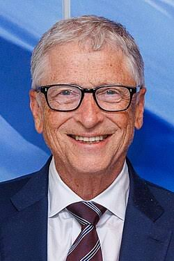
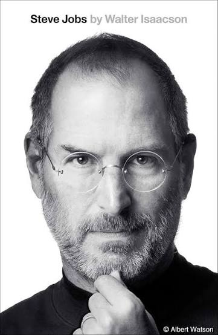
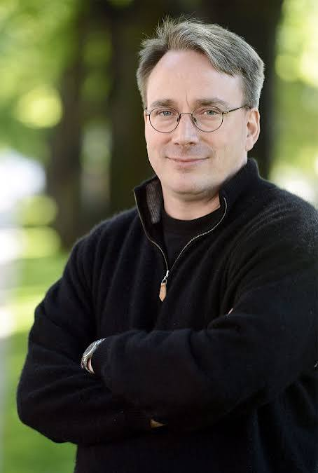

Personalidades da Tecnologia
Bill Gates

William Henry "Bill" Gates III KBE • GCIH (Seattle, 28 de outubro de 1955) é um magnata, empresário, diretor executivo, investidor, filantropo e autor norte-americano, que ficou conhecido por fundar, junto com Paul Allen, a Microsoft,[2] a maior e mais conhecida empresa de software do mundo em termos de valor de mercado. Gates ocupa atualmente o cargo de presidente não-executivo da Microsoft,[3] além de ser classificado regularmente como a pessoa mais rica do mundo, posição ocupada por ele de 1995 a 2007,[4] 2009,[5] e de 2014 a 2017.[6][7][8][9] É um dos pioneiros na revolução do computador pessoal. Biografia Infância e juventude Gates nasceu em uma família de classe média de Seattle. Seu pai, William H. Gates, era advogado de grandes empresas, e sua mãe, Mary Maxwell Gates, foi professora da Universidade de Washington e diretora de bancos. Bill Gates e as suas duas irmãs, Kristanne e Libby, frequentaram as melhores escolas particulares de sua cidade natal, e Bill também participou do Movimento Escoteiro ainda quando jovem. Bill Gates,[10] foi admitido na prestigiosa Universidade Harvard, (conseguindo 1 590 SATs dos 1 600 possíveis[11]) mas abandonou os cursos de Matemática e Direito no terceiro ano,[12] para dedicar-se à Microsoft. Trabalhou na Taito com o desenvolvimento de software básico para máquinas de jogos eletrônicos (fliperamas) até seus 16 anos. Também trabalhou como pesquisador visitante na University of Massachusetts at Amherst, UMASS, Estados Unidos, quando, com 17 anos, desenvolveu junto com Paul Allen um software para leitura de fitas magnéticas, com informações de tráfego de veículos, em um chip Intel 8008. Com esse produto, Gates e Allen criaram uma empresa, a Traf-o-Data, porém os clientes desistiram do negócio quando descobriram a idade dos donos.[13] Ascensão Altair 8800 Enquanto estudavam em Harvard, os jovens desenvolveram um interpretador da linguagem BASIC para um dos primeiros computadores pessoais a serem lançado nos Estados Unidos—o Altair 8800. Após um modesto sucesso na comercialização deste produto, Gates e Allen fundaram a Microsoft, uma das primeiras empresas no mundo focadas exclusivamente no mercado de programas para computadores pessoais ou PCs. Gates adquiriu ao longo dos anos uma fama de visionário (apostou no mercado de software na época em que o hardware era considerado muito mais valioso) e de negociador agressivo, chegando muitas vezes a ser acusado por concorrentes da Microsoft de utilizar práticas comerciais desleais. O primeiro computador pessoal Ver artigo principal: Computador pessoal O primeiro "computador pessoal" foi o Kenbak-1, lançado em 1971. Tinha 256 bytes de memória e foi anunciado na revista Scientific American por US$ 750; todavia, não possuía CPU e era, como outros sistemas desta época, projetado para uso educativo (ou seja, demonstrar como um "computador de verdade" funcionava). Em 1977 foi lançado o primeiro microcomputador como conhecemos hoje, o Apple II. Nos anos 1980, a IBM, líder no mercado de grandes computadores, resolveu entrar no mercado da microinformática com o PC, porém faltava o Sistema Operacional. Para isso, fechou contrato com a recém-criada Microsoft. Todavia, a Microsoft não possuía o software ainda. O jovem Bill Gates foi a uma pequena empresa que havia desenvolvido o sistema para o processador da Intel e decidiu comprá-lo, pagou cerca de US$ 50 mil, personalizou o programa e vendeu-o por US$ 8 milhões, mantendo a licença do produto. Este viria a ser o MS-DOS.
Steve Jobs

Steven Paul Jobs (São Francisco, 24 de fevereiro de 1955 – Palo Alto, 5 de outubro de 2011)[2] foi um inventor, empresário e magnata norte-americano do setor da informática. Notabilizou-se como cofundador, presidente e diretor-executivo da Apple Inc.[6] e por revolucionar seis indústrias: computadores pessoais, filmes de animação, música, telefones, tablets e publicações digitais.[7] Além de sua ligação com a Apple, foi diretor-executivo da empresa de animação por computação gráfica Pixar, e acionista individual máximo da The Walt Disney Company.[8] Morreu no dia 5 de outubro de 2011, aos 56 anos de idade, devido a um câncer pancreático.[2] Currículo de Steve Jobs[9] "Estou procurando um lugar que necessite de muitas reformas e consertos, mas que tenha fundações sólidas. Estou disposto a demolir paredes, construir pontes e acender fogueiras. Tenho uma grande experiência, um monte de energia, um pouco dessa coisa de ‘visão’ e não tenho medo de começar do zero". No final da década de 1970, Jobs, em parceria com Steve Wozniak e Mike Markkula, entre outros, desenvolveu e comercializou uma das primeiras linhas de computadores pessoais de sucesso, a série Apple II.[6] No começo da década de 1980, ele estava entre os primeiros a perceber o potencial comercial da interface gráfica do usuário guiada pelo mouse, o que levou à criação do Macintosh.[10] Após perder uma disputa de poder com a mesa diretora em 1985, Jobs foi demitido da Apple e fundou a NeXT, uma companhia de desenvolvimento de plataformas direcionadas aos mercados de educação superior e administração. A compra da NeXT pela Apple em 1996 levou Jobs de volta à companhia que ele ajudara a fundar, sendo então seu CEO de 1997 a 2011, ano em que anunciou sua renúncia ao cargo, recomendando Tim Cook como sucessor.[11] Em 2015, houve o lançamento do filme biográfico Steve Jobs, que conta parte da vida do cofundador da Apple Inc., remetendo a lançamentos feitos no período entre 1984 e 1998, como o Apple Macintosh, NeXT Computer e o iMac G3. A produção teve sua estreia, em 5 de setembro, no Tellurid Film Festival. A atriz Kate Winslet ganhou o Globo de Ouro e o BAFTA como melhor atriz-coadjuvante por seu papel, além de ter sido nomeada também para o Óscar na mesma categoria. O ator Michael Fassbender também concorreu ao Óscar de Melhor Ator, por interpretar Jobs. O filme ganhou o Globo de Ouro de melhor roteiro, escrito por Aaron Sorkin.[12][13] Primeiros anos Nascimento Steven Paul Jobs nasceu em São Francisco, filho de Joanne Schieble Jandali Simpson, nascida em Wisconsin, e de Abdulfattah Jandali, membro de uma proeminente família síria proprietária de poços de petróleo, empresas e propriedades agrícolas. O casal se conheceu em meados da década de 1950 na Universidade de Wisconsin. Os pais de Joanne, alemães católicos, eram contra o relacionamento.[14] Em 1954, o casal viajou escondido para a Síria. Jandali apresentou sua família a Joanne, que ficou hospedada na casa do namorado, mas a família dele não aceitou Joanne, que era americana, e eles queriam que o filho seguisse a tradição e se casasse com uma muçulmana. Ao voltarem para Wisconsin, Joanne se desesperou ao descobrir a gravidez e comunicou o fato a Jandali, que ficara muito assustado, mas decidido a assumir o bebê. No entanto, foram proibidos de se casarem pois as duas famílias eram contra a união. Quando descobriram o bebê, a família de Joanne e a de Jandali, por ser contra o aborto, queriam que entregassem o bebê para a adoção, ou os dois perderiam a herança da família.[14] Sem alternativas e nem como se sustentar até arrumar um emprego, Jandali voltou para a Síria, abandonou os estudos e começou a trabalhar, prometendo juntar dinheiro para tentar ter como criar o filho. Joanne viajou para São Francisco sozinha, a mando dos pais, onde ficou num abrigo, sob proteção de um médico que cuidava de mães solteiras, fazia partos e cuidava de adoções sigilosas. Os meses se passaram e Jandali não mandava notícias. Por mais que quisesse ficar com o bebê, não poderia criá-lo sem um lar e sem um pai presente. Após dar a luz em um parto sofrido, Joanne não quis entregar o bebê, e resistiu bastante até ser convencida pelo médico que era o melhor a se fazer. Mesmo depressiva, pensava no futuro do bebê, e exigiu que seu filho fosse adotado por um casal com pós-graduação universitária, pois queria um futuro brilhante para ele. Inicialmente, o bebê seria adotado por um advogado e sua esposa, que acabaram desistindo da adoção após o parto, pois queriam uma menina.[15] Após a recusa do primeiro casal, Joanne criou uma vaga esperança de ficar com o bebê e ainda aguardava notícias de Jandali, mas as semanas se passaram e um novo casal procurou o abrigo. Sem ter como esperar, já que seus pais foram buscá-la a força, o bebê foi deixado sob guarda de Paul Reinhold Jobs, mecânico e ex-membro da guarda costeira, e Clara Hagopian Jobs, filha de imigrantes armênios. Inicialmente Joanne recusou-se a deixar o abrigo com seus pais e a assinar os papéis da adoção, pois além de amar o bebê, o casal não tinha completado o segundo grau e Joanne temia um futuro miserável ao filho. O impasse só terminou após Paul assinar um compromisso de criar um fundo para enviar o menino à faculdade; assim, a jovem foi embora com os pais, triste e infeliz, esperançosa para reencontrar Jandali. Após meses, Jandali procurou Joanne, mas a família dela impediu a aproximação. Com isso, Joanne saiu do país e foi estudar em um internato. Os anos se passaram, e após estarem com suas carreiras consolidadas e independentes, ambos se reencontraram. Depois de um tempo de brigas e acusações, acabaram não resistindo à antiga paixão e, mesmo sem a aprovação das famílias, mesmo perdendo a herança, casaram-se no civil e no religioso. Juntos tiveram uma menina, Mona Simpson, e passam a investigar o destino do filho dado para adoção.[15][16][17][18] Juventude Em 1955, o casal Jobs adotou um menino recém-nascido, a quem batizam de Steven Paul Jobs[19] em um loteamento em Mountain View ao sul de Palo Alto.[19] Em seu novo lar, Paul Jobs mergulhou no passatempo de reformar e vender carros usados. As primeiras lições sobre design foram aprendidas durante o tempo em que Steve passava na garagem com seu pai, que tentava, infrutiferamente, ensinar sobre os princípios da arte da mecânica automóvel. Dois anos depois, o casal adotou uma menina recém-nascida, a quem batizam de Patty Jobs. Clara Jobs havia sido casada com um capitão do exército, que faleceu durante a guerra. Antes, porém, teve uma gravidez ectópica (fora do útero), sofrendo um aborto espontâneo e não podendo mais engravidar. Encontrou em Paul um marido carinhoso e compreensivo, que abdicou de ter filhos biológicos e, junto da esposa, compartilhou seu sonho de adoção.[19][20][13] A atmosfera tecnológica adquirida por Palo Alto a partir da década de 1960 inspirou o jovem Steve a se aprofundar no campo da eletrônica, descoberta durante as horas passadas na garagem de casa.[21] Durante o nono ano do ensino fundamental, Jobs começou a visitar a garagem do engenheiro Larry Lang, que o introduziu no Clube do Explorador da Hewlett-Packard, um grupo de estudantes que reuniam-se semanalmente no refeitório da empresa.[22] Em pouco tempo, Jobs conseguiu um emprego na empresa[23] e começou a se aprofundar em atividades culturais como literatura e música. Na eletrônica, passaram a frequentar as aulas dadas por John McCollum, durante o último ano do ensino médio. Nesse curso conheceu Stephen "Steve" Wozniak, cujo irmão mais novo era colega de Jobs na equipe de natação.[24] A amizade entre os dois Steves mostrou-se frutífera desde o início. Ambos eram apaixonados por eletrônica e por "pregar peças".[25] Um dos marcos do espírito "brincalhão" da dupla foi a criação de uma versão de um dispositivo que permitia a realização de chamadas de longa distância de graça, a partir da emissão de um som com frequência de 2 600 hertz chamada de "Caixa Azul" ou Blue Box. O som com essa frequência servia como "chave de encaminhamento de chamada da rede telefónica". A dupla de amigos começou a vender o equipamento a 150 dólares. A ideia para a construção do equipamento surgiu de uma reportagem da revista Esquire intitulada "Segredos da pequena Caixa Azul". "No meio dessa longa reportagem, tive de ligar para meu melhor amigo, Steve Jobs, e ler partes dela para ele", lembrou Wozniak.[26] A reportagem revelava que outros tons serviam como sinais de frequência única dentro da banda para encaminhar chamadas e que podiam ser encontrados numa edição da revista "Bell System Technical Journal". Numa tarde de domingo em setembro de 1971, Jobs e Wozniak invadiram a biblioteca do SLAC (Stanford Linear Accelerator Center) para obter a publicação.[26] Inicialmente a Caixa Azul era usada apenas para diversão. É folclórica a história em que Wozniak, fingindo ser Henry Kissinger ligou para o Vaticano para tentar falar com o Papa João Paulo II. A brincadeira tornou-se negócio após Jobs perceber o potencial do equipamento. O preço de custo para cada unidade era de quarenta dólares e o equipamento seria vendido a 150 dólares. Adotando apelidos como Berkeley Blue (Wozniak) e Oaf Tobark (Jobs) a dupla começou a vender os equipamentos. Nas demonstrações, ligavam para o hotel Ritz em Londres, ou para um serviço de piadas na Austrália. Os negócios com a Caixa Azul terminaram quando a dupla foi roubada por um cliente armado numa pizzaria. O empreendimento seria considerado por Jobs e Wozniak como um marco que permitiu a criação da Apple, pouco tempo depois. "Se não fosse pelas Caixas Azuis, não teria existido uma Apple. Tenho certeza absoluta disso. Woz e eu aprendemos a trabalhar juntos, e ganhamos a confiança de que podíamos resolver problemas técnicos e pôr efetivamente algo em produção.", afirmou Jobs.[27][28][13]
Linus Torvalds

Linus Benedict Torvalds[a] (born 28 December 1969) is a Finnish and American software engineer who is the creator and lead developer of the Linux kernel since 1991. He also created the distributed version control system Git. Torvalds was one of the recipients of the 2012 Millennium Technology Prize "in recognition of his creation of a new open source operating system for computers leading to the widely used Linux kernel".[4] He is also the recipient of the 2014 IEEE Computer Society Computer Pioneer Award[5] and the 2018 IEEE Masaru Ibuka Consumer Electronics Award.[6] Life and career Early years Torvalds was born in Helsinki, Finland, on 28 December 1969, the son of journalists Anna and Nils Torvalds,[7] the grandson of statistician Leo Törnqvist and of poet Ole Torvalds, and the great-grandson of journalist and soldier Toivo Karanko. His parents were campus radicals at the University of Helsinki in the 1960s. His family belongs to the Swedish-speaking minority in Finland. He was named after Linus Pauling, the Nobel Prize-winning American chemist, although in the book Rebel Code: Linux and the Open Source Revolution, he is quoted as saying, "I think I was named equally for Linus the Peanuts cartoon character", noting that this made him "half Nobel Prize–winning chemist and half blanket-carrying cartoon character".[8] His interest in computers began with a VIC-20[9] at the age of 11 in 1981. He started programming for it in BASIC, later writing machine code directly for the 6502 CPU (rather than using assembly language).[10] He then purchased a Sinclair QL, which he modified extensively, especially its operating system. "Because it was so hard to get software for it in Finland", he wrote his own assembler and "(in addition to Pac-Man graphics libraries)"[11] for the QL, and a few games.[12][13] He wrote a Pac-Man clone, Cool Man. Torvalds attended the University of Helsinki from 1988 to 1996,[14] graduating with a master's degree in computer science from the NODES research group.[15] His academic career was interrupted after his first year of study when he joined the Finnish Navy Nyland Brigade in the summer of 1989, selecting the 11-month officer training program to fulfill the mandatory military service of Finland. He gained the rank of second lieutenant, with the role of an artillery observer.[16] In 1990, Torvalds resumed his university studies, and was exposed to Unix for the first time in the form of a DEC MicroVAX running ULTRIX.[17] Later, he bought computer science professor Andrew Tanenbaum's book Operating Systems: Design and Implementation, in which Tanenbaum describes MINIX, an educational stripped-down version of Unix.[18] On 5 January 1991[19] he purchased an Intel 80386-based IBM PC clone[20] before receiving a copy of MINIX, which in turn enabled him to begin work on Linux. Linux Main article: History of Linux The first Linux prototypes were publicly released on the Internet in late 1991 from an FTP server at his university.[8][21] Version 1.0 was released on 14 March 1994.[22] Torvalds first encountered the GNU Project in the autumn of 1991 when another Swedish-speaking computer science student, Lars Wirzenius, took him to the Helsinki University of Technology to listen to free-software guru Richard Stallman's speech. Because of the talk and pressure from other contributors, Torvalds would ultimately switch his original license (which forbade commercial use) to Stallman's GNU General Public License version 2 (GPLv2) for his Linux kernel.[23] After a visit to Transmeta in late 1996,[24] Torvalds accepted a position at the company in California, where he worked from February 1997 to June 2003. He then moved to the Open Source Development Labs, which has since merged with the Free Standards Group to become the Linux Foundation, under whose auspices he continues to work. In June 2004, Torvalds and his family moved to Dunthorpe, Oregon[25] to be closer to the OSDL's headquarters in Beaverton. From 1997 to 1999, he was involved in 86open, helping select the standard binary format for Linux and Unix. In 1999, he was named by the MIT Technology Review TR100 as one of the world's top 100 innovators under age 35.[26] In 1999, Red Hat and VA Linux, both leading developers of Linux-based software, presented Torvalds with stock options in gratitude for his creation.[27] That year both companies went public and Torvalds's share value briefly shot up to about US$20 million.[28][29] His personal mascot is a penguin nicknamed Tux,[30] which has been widely adopted by the Linux community as the Linux kernel's mascot.[31] Although Torvalds believes "open source is the only right way to do software", he also has said that he uses the "best tool for the job", even if that includes proprietary software.[32] He was criticized for his use and alleged advocacy of the proprietary BitKeeper software for version control in the Linux kernel. He subsequently wrote a free-software replacement for it called Git. In 2000, the CEO of Apple Steve Jobs, proposed to Linus to work on macOS, requiring him to stop his work on the Linux kernel. Linus refused, also arguing that the Mach kernel was too different from Linux.[33] In 2008, Torvalds stated that he used the Fedora Linux distribution because it had fairly good support for the PowerPC processor architecture, which he favored at the time.[34] He confirmed this in a 2012 interview.[35] Torvalds abandoned GNOME for a while after the release of GNOME 3.0, saying, "The developers have apparently decided that it's 'too complicated' to actually do real work on your desktop, and have decided to make it really annoying to do". He then switched to Xfce.[36] In 2013, Torvalds resumed using GNOME, noting that "they have extensions now that are still much too hard to find; but with extensions you can make your desktop look almost as good as it used to look two years ago".[37][38] The Linux Foundation currently sponsors Torvalds so he can work full-time on improving Linux.[39] In 2012, while giving a talk at Aalto University, Torvalds said "fuck you" and raised his middle finger after criticizing the company Nvidia, which specializes in GPU technology. He said Nvidia was, at the time, the single worst company he has dealt with in the development of the kernel. In the talk, he also discussed other elements of computing.[40][41] Torvalds is known for vocally disagreeing with other developers on the Linux kernel mailing list.[42] Calling himself a "really unpleasant person", he explained, "I'd like to be a nice person and curse less and encourage people to grow rather than telling them they are idiots. I'm sorry—I tried, it's just not in me."[43][44] His attitude, which he considers necessary for making his points clear, has drawn criticism from Intel programmer Sage Sharp and systemd developer Lennart Poettering, among others.[45][failed verification][46] On Sunday, 16 September 2018, the Linux kernel Code of Conflict was suddenly replaced by a new Code of Conduct based on the Contributor Covenant. Shortly thereafter, in the release notes for Linux 4.19-rc4, Torvalds apologized for his behavior, calling his personal attacks of the past "unprofessional and uncalled for" and announced a period of "time off" to "get some assistance on how to understand people's emotions and respond appropriately". It soon transpired that these events followed The New Yorker approaching Torvalds with a series of questions critical of his conduct.[47][48][49] Following the release of Linux 4.19 on 22 October 2018, Torvalds returned to maintaining the kernel.[50] In 2024, amidst the Russian invasion of Ukraine, some developers were excluded from the list of Linux kernel maintainers, seemingly over being Russian or using Russian email addresses. Torvalds commented: "I'm Finnish. Did you think I'd be supporting Russian aggression?" Some developers, along with a part of Linux users, noted the lack of public clarity about that move. Later Torvalds claimed that he acted according to government compliance requirements and due to legal issues around Russia.[51][52]